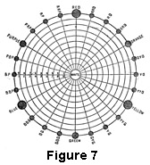

1922—Millinery
by Charlotte Rankin Aiken, B.A.
Chapter XII—PRINCIPLES OF COLOR
This chapter, containing the essential principles of
color, was prepared by the editor and appears in several of the manuals of
this series.
Importance of a Knowledge of Color to the Salesperson
Color is a matter of very great importance in connection with many varieties of merchandise. In order to judge textiles, china and glass, art embroidery, draperies, rugs, ready-to-wear garments, millinery, and many other varieties of merchandise intelligently, some fundamental knowledge of color is essential. The accepted theories of color and color combinations are therefore given here briefly.
Combinations of Colors
There are two ways of combining colors which produce quite different results. They are:
- The combination of colored lights.
- The combination of colored pigments or dyes.
When different colored lights are combined, the result is a combination of the two colors. When colored pigments are combined, one color seems to absorb or counteract the other. One explanation of the difference is that the pigments are never perfectly pure, that is, they contain elements of other colors and therefore cannot give the same result as a combination of the similar colored lights.
All colors are produced by the effect of light upon the nerves of the eye, and as the eye sees them, colors are contained within the light itself, forming when united a white or colorless light, as in sunlight. It is only when part of the light rays are in some way absorbed or intercepted that we see the remaining rays as distinct colors.
The Spectrum
Nearly every one has seen the band of beautiful colors which is formed by a beam of sunlight passing through a prism. The same effect is produced when the sun's rays pass through the raindrops and we see the beautiful band or rainbow of colors in the sky.
The theory is that as the beam of sunlight passes through the prism, it is separated or split into the elements of which it is made up and forms a band of colors instead of a white light. This band of colored light is called the spectrum, and the colors, whether seen through the prism or in the rainbow, are known as the spectrum colors. They are red, orange, yellow, green, blue, and violet. But when we see these colors, either in the rainbow or through the prism, there is every gradation from one color to the next so that the change from one color to the other is almost imperceptible. For instance, the red changes through the different degrees of red-orange to orange, and this changes through the orange-yellows to yellow; the yellow changes through the yellow-greens to green; the green changes through the green-blues to blue; the blue changes through the violet-blues to red.
Standard Colors
The colors of the spectrum are accepted as the normal or standard colors: red, orange, yellow, green, blue, and violet.
These normal or standard colors are represented in each case by the greatest intensity of the color. For instance, the standard red is the most intense red, the standard blue is the strongest blue, and so on.
While the spectrum has six colors which seem to be of equal importance in the ray of light, we find that in mixing pigments or dyes they fall into two classes called primary and secondary colors.
Primary Colors
The primary colors are so individual that they cannot be produced by any mixture of other colors. They are red, blue, and yellow.
Secondary Colors
Secondary colors may be made by mixing two of the primary ones. They are:
- Orange, made by mixing red and yellow.
- Green, made by mixing yellow and blue.
- Violet, made by mixing blue and red.*
*There are several theories concerning the number of primary colors in light, but they do not alter the fact that blue, red, and yellow cannot be made in pigments or dyes by combining other colors; while the tints, shades, and hues of all other colors except blue, red, and yellow may be made by means of such combinations.
Characteristics of Primary Colors
Of the three primary colors, yellow is the most "advancing," that is, seems to stand out from its background. It is nearest to white and possesses the greatest power of reflecting light. It imparts brilliancy in a greater or less degree to every compound into which it enters.
Red is the most positive. It represents warmth as it is brilliant and cheerful, and it appears to advance somewhat. Red expresses vibration, action, and warmth.
Blue is the most "retiring" of the primaries and represents coldness, appearing to recede from the eyes. It imparts coldness in various degrees to every color or hue into the composition of which it enters.
Characteristics of Secondary Colors
Of the secondary colors, green, composed of the primaries blue and yellow, is cool or warm as it inclines to blue or yellow. Yet in general it is cool, cheerful, and refreshing.
Orange, composed of yellow and red, is the most "advancing" of the secondaries. It is composed of two luminous colors and is considered the warmest and most powerful of all the colors. It should therefore be used sparingly.
Violet or purple, composed of red and blue, is the darkest of the secondary colors and is related most nearly to black. It reflects very little light and looks still darker in a declining light. It is a retiring color and, although red enters into its composition, it cannot be classed as a warm color except in its redder hues. In yellow artificial light, such as gaslight, it appears brown. Next to green, purple may be considered the most pleasing of the secondary colors and has almost universally been considered the royal or imperial color. It is probable, however, that the Tyrian purple, of which we have heard so much, approached a crimson or red, rather than the deep and subdued color known as purple today.
Luminous and Somber Colors
Colors are also described as:
- Luminous or warm:
- Yellow
- Orange
- Red
- Light green
- Somber or cold:
- Blue
- Violet
- Dark green
- Broken tones of luminous colors
Broken Colors
Tertiary or broken colors are not found in the spectrum, but may be made by mixing two secondary colors. They contain all three primary colors in unequal proportions and are named according to the predominating color:
- Russet, orange plus purple—red predominating.
- Olive, purple plus green—blue predominating.
- Citrine, orange plus green—yellow predominating.
Besides the compound colors called tertiaries, there are many other hues into which the three primary colors enter. Among these the most characteristic are brown, maroon, and gray.
Brown requires black for its basis, with a mixture of citrine and olive. It is a retiring and sedate color, but not dismal nor depressing.
Maroon is formed by a mixture of russet and olive, with an excess of red.
Gray is always restful to the eyes. A perfectly neutral gray which forms the perfect background for other colors, is a combination of black and white. Besides the neutral gray, there are many others, as blue-grays, olive-grays, and green-grays, formed by adding other colors.
Black and white make gray in whatever combination they are used.
Absorption and Reflection of Color
The color of any object is due to its power to absorb certain colored rays in white light and to reflect others. An object which looks red reflects only the red and has absorbed the other colored rays. A blue body reflects the blue and absorbs all other rays.
White substances reflect all the rays of light; black substances absorb them all. For this reason black is said to be the absence of all colors, as white is the presence of all. (However, no mixture of colored pigments will produce white. The theory is true only of light rays. Mixtures of colored paints will produce gray.)
By its absorption of light rays, black lowers the tone of any color placed next to it. Some colors, such as yellow, it "impoverishes."
By its reflection of all light rays, white heightens or brightens the tone of any color which is placed close beside it.
Complementary Colors
The color rays absorbed by any substance "complement," or complete, the ones reflected in making white light. Therefore, they are called the complementary colors.
The complementary color of:
- Blue is orange.
- Red is green.
- Yellow is violet.
In the diagram (Figure 7) the complementary colors are found by following the various lines across the circle to the opposite outer edge.
These colors are sometimes supplied by the nerves of the eye itself which are wearied by looking too long at one hue. This may be proved by a simple experiment.
If a circular piece of red paper is placed on a white background and looked at steadily for a time, and then the eyes are turned toward a white surface, a green circle exactly corresponding in size to the red one first seen will appear. A blue or a yellow circle will produce their complementary colors in a similar manner.
This exhaustion of the nerves of the eye also causes a color to appear duller after one has looked at it a long time. If the nerves are rested by another color—especially the complementary one—they will become normal again.
When the complementary colors are reflected from another color rather than a white background, they change the hue of that color.
To eyes which are fatigued by looking at blue, red will appear like an orange-red, yellow will be more intense, and green will appear as a yellow-green. If red has been looked at, blue will appear as a green-blue, yellow as a green-yellow, and green will appear blue. After green, red will have a violet appearance, yellow will be more like orange, blue will be a violet-blue, and orange a red-orange. These are matters of great importance in the display of merchandise. The following rules should be remembered:
- Red near blue seems yellower.
- Red near yellow seems bluer.
- Red near green seems purer and brighter.
- Red near black seems duller.
- Red near white seems brighter.
- Red near gray is not changed.
Other colors are affected in similar ways.
These effects are produced by the natural tendency to see the complementary of any color, which in the case of green intensifies the red and in all the other cases changes its color by mixing their complementary color with it.
Properties of Color
Colors may be distinguished according to their hue, their value, and their intensity.
Hues
The word hue may be used in three ways.
In writings on the science of color hue signifies the property which distinguishes one color from another.
In common speech it is employed to mean a particular shade or degree of color.
The word is correctly used when applied to the modification of one color by the addition of another color. Thus, red-violet and blue-violet are hues of violet made by the excess of red or of blue. In the diagram the hues are found between the primary and secondary colors. Still further divisions are possible.
Values
The value or tone of a color is the gradation from light to dark by the addition of white in the lighter tones and of black in the darker ones. A tone lighter than the standard is properly called a tint, and one darker is called a shade, but many people call both tints and shades "shades." Rose color is a tint of red, while crimson is a shade.
In the diagram the concentric circles represent the tints produced by adding varying amounts of white; the numerals above the line represent the parts of color; those below, the parts of white.
Color Scales
The scale of any color, whether it be a pure color or a hue, consists of all the tones from the lightest tint to the darkest shade. There are, for instance, scales of green-blue, purple-blue, and gray-blue.
Intensity
Intensity is the strength of a color. The normal or standard colors are in full intensity. The intensity of a color is reduced by "graying" it with its complementary color. By the addition of orange to blue, or of green to red, the color may be subdued to half-intensity or quarter-intensity, and so on. If a large amount of the complementary is added, the original color will be reduced to a dull gray.
Color Harmonies
Harmony in the combination of colors may be of two kinds:
- Harmony of contrast.
- Harmony of analogy or likeness.
Harmony of contrast is between colors which are most unlike each other. It is perfect when the colors are complementary. Blue and orange, or red and green, are perfectly harmonious, one of the reasons for the pleasant sensation being that each one deepens the color of the other and makes it purer. The true contrasting color of any color may be found by following the cross lines in the diagram. The harmony of complementary colors is very bright if the colors are in full intensity. Grayed or broken tones make a quieter harmony.
Harmony by contrast may also be secured with the hues on each side of the complementary color, as blue with red-orange, or yellow or red with blue-green or blue-violet.
The harmony of analogy or likeness is between colors of the same or related color scales. They may be:
- Different shades or tints of the same scale, as light red and dark red.
- Different hues of the same color, as blue-green and yellow-green.
The first is sometimes called a mono-chromatic or self-color harmony. The tints or shades combined should have enough variety to be distinct, but should not be so different as to lose their likeness and form a harmony of contrast. On the diagram these harmonies are shown along each line from the full color to white.
A dominant harmony may be formed by the use of a number of hues of the same color, as yellow-green, gray-green, and blue-green, which blend because green is dominant.
Color Under Artificial Light
All colors undergo more or less change under artificial light.
Under gas or lamplight, which is much yellower than daylight, purples and violets often appear brown. Some of the darker hues are almost destroyed.
- Blue is darkened.
- Brown is made warmer in hue.
- Green is yellower.
- Red, orange, and yellow are all brightened.
The inverted gas mantle gives a somewhat less yellow light, and therefore these effects are somewhat less pronounced.
The incandescent electric light gives a violet hue to blue, and a reddish hue to brown. It seems to add some red as well as yellow to colors.
The arc light and Welsbach gas mantle have an excess of blue, which is imparted to colors.